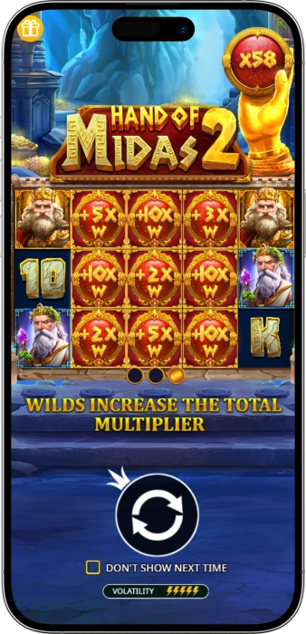
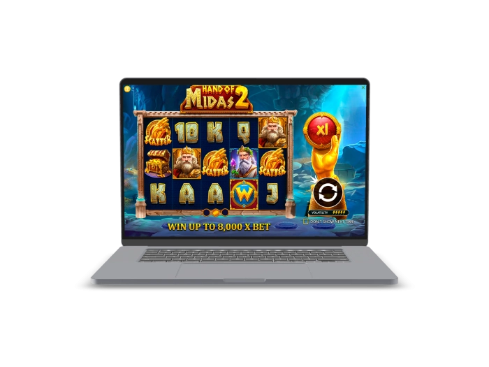

Exclusive welcome offer of
Exclusive welcome bonus of
Hand of Midas 2 — Golden Slot by Pragmatic Play
Top Casinos
Bonus Details
Casino
Bonuses
Rate
Free Spins
More Info
Get
Advantages
- Hand of Midas 2 by Pragmatic Play delivers high-volatility Greek mythology action with certified 96.07% RTP and 8,000x max win. Sticky wild multipliers and retriggerable free spins create explosive win potential on every spin. Here's why players choose this slot:
-
96.07% RTP certified by independent auditors — fair & transparent gameplay
-
Maximum win potential of 8,000x your stake — up to $1,920,000 per spin
-
Wild Multipliers up to 10x with Sticky Wilds during Free Spins rounds
-
Retriggerable Free Spins — up to 18 spins with no trigger limit
-
Bonus Buy feature available at 100x bet for instant Free Spins access
-
Developed by Pragmatic Play — award-winning certified iGaming provider
- Join thousands of players spinning the golden reels of Hand of Midas 2 daily. With RNG-certified fairness, high-volatility thrills, and a maximum payout of 8,000x, every spin could turn into pure gold.
Hand of Midas 2 App



About Hand of Midas 2 Slot
We present Hand of Midas 2, Pragmatic Play's acclaimed high-volatility video slot inspired by the legend of King Midas. Built on a 5x3 grid with 20 paylines, it offers certified 96.07% RTP and up to 8,000x max win for every player.
- Launched by Pragmatic Play with RNG-certified fair gameplay
- 5x3 grid, 20 paylines, bets from $0.20 to $240 per spin
- Wild Multipliers up to 10x introduced in Free Spins mode
- Bonus Buy feature added for instant Free Spins access at 100x bet
Hand of Midas 2 operates on a fully certified RNG engine audited to industry standards. The slot uses Pragmatic Play's licensed software framework, ensuring every spin outcome is random, transparent, and tamper-proof for all online players.

We continue enhancing the Hand of Midas 2 experience with new casino partnerships and wider availability. Discover sticky wilds, golden multipliers, and mythological thrills. Try our free demo or play for real money and touch the golden reels today!
Hand of Midas 2 Slot Features & Gameplay
Hand of Midas 2 Slot Features & Gameplay Guide
Hand of Midas 2 is a high-volatility video slot developed by Pragmatic Play, one of the most recognized and award-winning iGaming providers in the online casino industry. Built on a classic 5-reel, 3-row grid with 20 fixed paylines, this mythologically inspired online slot game invites players to enter the legendary world of King Midas — where everything touched turns to gold. With a certified RTP of 96.07%, a minimum bet of $0.20, a maximum bet of $240, and an extraordinary maximum win potential of 8,000x the total wager, Hand of Midas 2 delivers a premium slot experience for both casual spinners and high-rollers seeking explosive payouts. The game's hit frequency stands at 27.77%, meaning roughly one in four spins produces a win — a solid balance between action and volatility for online slot enthusiasts.
Base Game Mechanics: How the Reels Work
The Hand of Midas 2 slot plays on a straightforward 5x3 matrix, awarding wins left to right starting from the leftmost reel. The 20 paylines are fixed, meaning all lines are always active on every spin — no need to adjust paylines manually. This structure maximizes every spin's winning potential from the very first reel, a feature appreciated by players who prefer transparent, no-fuss slot mechanics. Bets range from a low of $0.20 per spin up to the high-roller cap of $240 per spin, giving every type of online casino player full flexibility to manage their bankroll according to their style. The visual design draws heavily from ancient Greek mythology, presenting golden symbols, ornate iconography of King Midas, and a rich atmospheric soundtrack that immerses players in the opulence of the mythological setting.
- 5x3 Reel Grid: Classic five-reel, three-row layout with wins awarded left to right, providing a familiar and intuitive gaming structure for online slot players.
- 20 Fixed Paylines: All paylines are permanently active on every spin — no need to adjust bet lines, ensuring maximum coverage and consistent action throughout each gaming session.
- Flexible Bet Range: Stakes run from $0.20 minimum to $240 maximum per spin, accommodating budget players and high-rollers alike across all online casino platforms offering this title.
- High Volatility Rating: Pragmatic Play rates this slot at maximum volatility — wins are less frequent but significantly larger when they do land, making patience and proper bankroll management essential strategies.
- 27.77% Hit Frequency: Approximately 1 in 4 spins generates a winning combination in the base game, providing regular small wins that keep the gameplay engaging between bigger bonus triggers.
Wild Symbols and Multiplier Mechanics
The Wild symbol in Hand of Midas 2 is arguably the most important symbol in the entire game, and it plays a central role in both the base game and the Free Spins bonus round. Wild symbols substitute for all regular paying symbols on the reels, helping complete winning combinations across the 20 paylines. However, the truly exciting aspect of the Wild in this Pragmatic Play online slot is its multiplier mechanic — each Wild symbol carries a random multiplier value that is applied to any win it helps complete. These Wild multipliers can reach values of up to 10x the standard win amount, meaning a single well-placed Wild can dramatically amplify payouts during any given spin. During the base game, Wilds appear on all reels and bring their multiplier values with them on every occurrence.
- Wild Substitution: Wild symbols replace all standard symbols on the reels, completing partial winning combinations across all 20 active paylines for enhanced base game wins.
- Wild Multipliers up to 10x: Each Wild carries a randomly assigned multiplier of up to 10x — when multiple Wild multipliers appear on the same payline, the values multiply together for compounding payout boosts.
- Sticky Wilds in Free Spins: Once triggered, Wild symbols during the Free Spins round become sticky — they lock in place for the remainder of the bonus round, building a growing collection of active multiplier Wilds on the reels.
- Compounding Multiplier Effect: When two Wild multipliers land on the same winning payline, their values multiply together rather than adding — for example, a 5x Wild combined with a 4x Wild produces a 20x total multiplier on that line's win.
Free Spins Bonus Round: The Heart of the Game
The Free Spins feature in Hand of Midas 2 is triggered by landing 3, 4, or 5 Scatter symbols anywhere on the reels simultaneously during the base game. The number of Scatter symbols that trigger the feature determines the starting number of free spins awarded — the more Scatters, the more spins you receive to begin your bonus round. Once inside the Free Spins mode, the sticky Wild mechanics take full effect: every Wild that lands on the reels during free spins stays in position for the rest of the bonus, accumulating golden multiplier coverage across the grid. This mechanic means that the longer the Free Spins round lasts, the more Wilds are present, and the more explosive each subsequent spin becomes. The bonus round can be retriggered with no upper limit — landing 2 or more Scatter symbols during Free Spins adds additional spins to your total, potentially extending the bonus to a maximum of 18 free spins in a single session.
- Trigger Requirement: Land 3, 4, or 5 Scatter symbols anywhere on the 5-reel grid simultaneously to activate the Free Spins bonus round from the base game.
- Sticky Wild Accumulation: Every Wild landing during Free Spins locks in place for the duration of the bonus, progressively filling the grid with active multiplier Wilds that enhance every subsequent spin's payout potential.
- Retriggerable Without Limit: Landing 2 or more Scatter symbols during the active Free Spins round adds more spins to the total — this can be triggered repeatedly with no cap, allowing the bonus to extend up to 18 free spins maximum.
- Maximum Win Path: The 8,000x maximum win is most realistically achieved during a fully loaded Free Spins round, with multiple sticky Wilds carrying high multiplier values simultaneously active across the reels.
- Probability Context: The maximum 8,000x win has a probability of approximately 1 in 4,702,222 spins — a rare but achievable milestone for dedicated slot players over extended sessions.
Hand of Midas 2 RTP & Volatility Breakdown
Understanding the Return to Player percentage and volatility rating is essential before wagering real money on any online slot, and Hand of Midas 2 offers complete transparency on both metrics. The standard RTP for this Pragmatic Play video slot is 96.07%, which is considered fair and competitive within the online slot market. This figure represents the theoretical long-term return to all players across millions of spins — for every $100 wagered, the slot is expected to return $96.07 on average over extended play. It is important to note that Pragmatic Play also makes available reduced RTP variants of this game — casinos may configure the slot at 95.05% or 94.06% RTP depending on their operator settings. The Bonus Buy feature carries a marginally adjusted RTP of 96.04%, effectively the same standard as the base game RTP.
| Metric | Value | Notes |
|---|---|---|
| RTP (Standard) | 96.07% | Best available version |
| RTP (Reduced) | 95.05% / 94.06% | Operator configured |
| RTP (Bonus Buy) | 96.04% | When buying Free Spins |
| Volatility | High / Very High | 5/5 Pragmatic scale |
| Hit Frequency | 27.77% | ~1 in 4 spins wins |
| Max Win | 8,000x | 1 in 4,702,222 probability |
| Min Bet | $0.20 | Accessible for all players |
| Max Bet | $240 | High-roller friendly |
Bonus Buy Feature: Skip Straight to the Action
One of the most appealing features for experienced online slot players is the Bonus Buy option built into Hand of Midas 2 by Pragmatic Play. Rather than waiting through potentially hundreds of base game spins for a natural Free Spins trigger, the Bonus Buy feature allows players to purchase direct access to the Free Spins round at a cost of 100x the current total bet. At the minimum stake of $0.20, that means a Bonus Buy costs just $20 — while at the maximum bet of $240, the feature costs $24,000 to activate. When purchasing the Free Spins round through the Bonus Buy, Pragmatic Play guarantees that 4, 5, or 6 Bonus symbols will land randomly to initiate the feature — providing a statistically stronger starting position than a standard natural trigger from 3 Scatters. The Bonus Buy RTP is 96.04%, virtually identical to the standard 96.07%, making it a fair and transparent option for players who prefer immediate bonus access over extended base game play.
Is Hand of Midas 2 Right for You?
Hand of Midas 2 is specifically designed for players who enjoy high-stakes, high-reward slot experiences with a rich mythological theme. If you prefer frequent small wins and steady base game payouts, the high volatility nature of this online slot may not match your preferred playing style — but if you thrive on the excitement of building sticky Wild combinations and watching multipliers compound during an extended Free Spins run, this Pragmatic Play title delivers exactly that experience. The broad bet range from $0.20 to $240 ensures accessibility for all player types, and the transparent 96.07% RTP certified by independent auditors guarantees a fair gaming framework. Whether you're a casual player exploring Greek mythology slots for the first time or a seasoned high-roller chasing the legendary 8,000x maximum win, Hand of Midas 2 offers a compelling and well-crafted online slot adventure worth every spin.
Software Providers
How to Play Hand of Midas 2 & Win
How to Play Hand of Midas 2 Online Slot & Maximize Your Wins
Playing Hand of Midas 2 online is straightforward, but understanding the game's mechanics, bonus features, and strategic bet management can significantly improve your overall experience with this high-volatility Pragmatic Play slot. The game is fully optimized for both desktop and mobile play, ensuring seamless performance across all devices — whether you're spinning on a laptop, tablet, or smartphone. The core objective is to land matching symbols across the 20 fixed paylines from left to right, with the Wild multiplier system and Free Spins bonus round providing the pathways to the game's most rewarding payouts. With a maximum potential of 8,000x your total stake and sticky Wild mechanics that build in power throughout the bonus round, every session with the Hand of Midas 2 slot carries genuine big-win potential for players who understand how the game operates.
Step-by-Step Guide: Starting Your First Spin
Getting started with Hand of Midas 2 requires no prior experience with Pragmatic Play titles — the interface is intuitive, clearly labeled, and designed for fast, accessible gameplay. Before placing your first real-money bet, we recommend trying the free demo version available at most online casinos offering this slot, which allows you to explore all features including Wild multipliers, Free Spins, and the Bonus Buy option without any financial risk. Once comfortable with the mechanics, transitioning to real-money play is simple and takes only a few steps.
- Step 1 — Choose Your Stake: Use the bet selector to set your preferred wager between $0.20 and $240 per spin. For high-volatility slots like this, starting at a mid-range stake helps balance session length with win potential.
- Step 2 — Review Paytable: Click the information icon to access the full paytable showing symbol values, Wild multiplier ranges, Scatter trigger requirements, and Bonus Buy cost for your selected bet level.
- Step 3 — Spin the Reels: Hit the Spin button to begin — or activate Autoplay for a preset number of spins (typically 10, 25, 50, or 100) with optional stop conditions such as a single win exceeding a set amount.
- Step 4 — Watch for Wilds: Wild symbols with multiplier values (up to 10x) can appear on any reel at any time. When multiple Wild multipliers land on the same payline, their values compound — a 3x and a 5x Wild on the same line produces a 15x total multiplier.
- Step 5 — Trigger Free Spins: Landing 3, 4, or 5 Scatter symbols anywhere on the grid simultaneously triggers the Free Spins bonus round where sticky Wilds accumulate, building toward the 8,000x maximum win potential.
- Step 6 — Consider Bonus Buy: If you want to skip base game variance and jump directly into Free Spins, use the Bonus Buy at 100x your current bet. This guarantees a Free Spins trigger with 4–6 Scatter symbols landing immediately.
Mobile Gaming: Hand of Midas 2 on Any Device
Pragmatic Play develops all its online slot titles with a mobile-first philosophy, and Hand of Midas 2 is no exception. The game runs flawlessly on iOS and Android smartphones and tablets through any mobile browser without requiring a dedicated app download. The 5x3 grid adapts perfectly to portrait and landscape screen orientations, maintaining full visual quality, smooth animations, and complete feature access regardless of device type. The touch-screen interface makes spinning, accessing the paytable, and using the Bonus Buy feature feel entirely natural on mobile. Whether you're playing at home on your desktop or spinning the golden reels on the go from your phone, Hand of Midas 2 delivers a consistently premium online slot experience powered by Pragmatic Play's certified HTML5 technology framework.
Symbol Values & Paytable Overview
Understanding symbol values in Hand of Midas 2 helps players identify the highest-value combinations and prioritize awareness of which symbols to watch for during base game play. The game uses a standard high-card symbol set for lower-value wins alongside thematic mythological symbols for the premium payouts. The golden King Midas-themed premium symbols deliver the most significant payouts on a single payline, especially when enhanced by Wild multipliers. Below is an overview of the game's pay structure for maximum 5-of-a-kind combinations at a reference bet level — actual values scale proportionally with your chosen stake and any Wild multiplier applied.
| Symbol | Type | Pay (5-of-kind) |
|---|---|---|
| King Midas | Premium | Highest payout |
| Golden Mask | Premium | High payout |
| Golden Chalice | Premium | Mid-high payout |
| Golden Coin | Mid | Mid payout |
| A / K | Low | Low payout |
| Q / J / 10 | Low | Lowest payout |
| Wild (x1–x10) | Wild/Multiplier | Substitutes + multiplies |
| Scatter | Bonus Trigger | 3+ triggers Free Spins |
Bankroll Management Tips for High-Volatility Play
Because Hand of Midas 2 carries a high volatility rating, managing your bankroll effectively is one of the most important strategies for enjoying extended sessions and maximizing your chances of landing a bonus round with significant win potential. High-volatility online slots are specifically designed to deliver larger wins less frequently, meaning short sessions at insufficient bankroll levels often end without triggering the game's most rewarding features. Experienced slot players generally recommend maintaining a session bankroll of at least 100x to 200x the chosen bet per spin when playing high-volatility games of this type — this buffer provides enough spin volume to realistically encounter multiple Free Spins triggers and experience the game's full win potential range.
- Recommended Session Budget: Allocate 100–200x your chosen bet per session — at $1 per spin, a $100–$200 session budget provides sufficient spin volume for realistic Free Spins trigger opportunities.
- Start with Demo Mode: Always explore the free demo version of Hand of Midas 2 first to understand Wild multiplier behavior, Scatter trigger frequency, and sticky Wild mechanics before committing real funds.
- Bonus Buy Consideration: The 100x Bonus Buy is best suited for players with larger session budgets who prefer guaranteed bonus access over extended base game grinding — use it strategically rather than repeatedly.
- Set Win/Loss Limits: Use the Autoplay feature's built-in stop conditions to set a maximum single win target and a maximum loss limit before beginning automated play, ensuring disciplined bankroll protection throughout your session.
- Responsible Gaming Tools: All reputable online casinos offering Hand of Midas 2 provide responsible gaming tools including deposit limits, session time reminders, and self-exclusion options — always play within your financial means and personal limits.
Hand of Midas 2 vs. Hand of Midas 1: What's New?
Hand of Midas 2 builds directly on the foundation established by the original Hand of Midas slot, retaining the Greek mythology theme and core Wild mechanic while introducing enhanced multiplier values and a more refined sticky Wild system during Free Spins. The original title established the formula of Wild multipliers and Midas-themed symbolism that players loved, while this sequel refines those mechanics and pushes the maximum win ceiling higher. The Bonus Buy option, enhanced Wild multiplier range up to 10x, and the retriggerable Free Spins with no upper limit represent meaningful evolutionary steps for fans of the original game. Both titles are available at online casinos powered by Pragmatic Play, giving players the option to compare the two versions and choose their preferred style of golden-touch gambling entertainment from one of the industry's most respected certified providers.
Frequently Asked Questions
The RTP of Hand of Midas 2 is 96.07% in its best standard version, certified by independent auditors. Pragmatic Play also offers 95.05% and 94.06% reduced variants — operators may configure any version. The Bonus Buy RTP is 96.04%, virtually identical to the standard rate.
Land 3, 4, or 5 Scatter symbols anywhere on the reels simultaneously to trigger the Free Spins bonus round. During Free Spins, Wild symbols become sticky and stay on the reels, building multiplier coverage. Retriggering is unlimited — land 2+ Scatters during the bonus for additional spins up to 18 total.
The maximum win in Hand of Midas 2 is 8,000x your total stake, developed by Pragmatic Play. At the max bet of $240, that represents a $1,920,000 potential payout. This ceiling is most achievable during a fully loaded Free Spins round with multiple sticky Wild multipliers active across the reels.
The Bonus Buy feature costs 100x your current total bet and grants immediate access to the Free Spins round, bypassing base game play entirely. Pragmatic Play guarantees 4, 5, or 6 Bonus Scatter symbols land to start the feature. The Bonus Buy RTP is 96.04% — nearly identical to the standard game.
Yes — Hand of Midas 2 is fully optimized for mobile play on iOS and Android devices via any modern mobile browser, with no app download required. The slot uses Pragmatic Play's HTML5 technology for seamless portrait and landscape play, delivering the full feature set on smartphones and tablets.
Wild Multipliers are special Wild symbols that carry a random multiplier value of up to 10x applied to any winning combination they help complete. During Free Spins, these Wilds become sticky and remain on the reels permanently. When two Wild multipliers appear on one payline, their values multiply together for compounding payout boosts.
Hand of Midas 2 was developed by Pragmatic Play, one of the world's leading certified iGaming software providers. The game was released in June 2024 as a sequel to the original Hand of Midas slot, featuring enhanced Wild multiplier mechanics and a refined Free Spins system on the same 5x3, 20-payline grid.
Yes — most online casinos offering Hand of Midas 2 provide a free demo or practice mode allowing players to explore all features, including Free Spins and the Bonus Buy option, without real money risk. Demo play uses virtual credits and provides full access to the game's mechanics and bonus features.